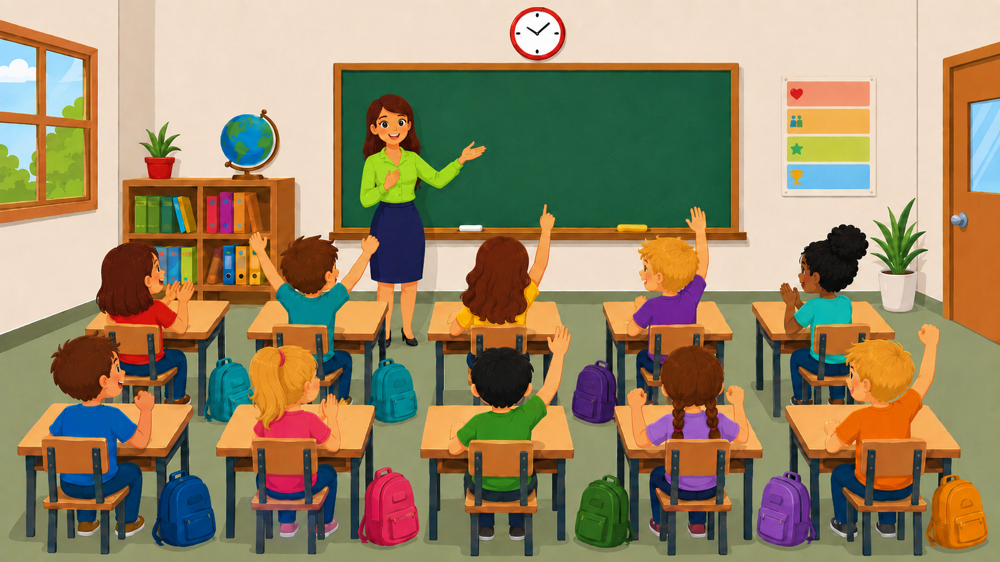

Kooperative Verhaltensmodifikation
Szenario
Antwortzeit
20
Interaktive Phase · Schritt 3
Reagiere auf Störungen im laufenden Unterricht. Klicke ein erreichbares Feld an; die Lehrkraft läuft automatisch dorthin.
Klassenzimmer
Klicke nach dem Start ein freies Feld an. Die Lehrkraft läuft automatisch den kürzesten freien Weg.
Katalog / Prüfansicht
Die Szenarien werden mit Variablen aus Sitzplan, Schülerprofilen, Klassenregeln und Auswertung befüllt.
Kooperative Verhaltensmodifikation

Auswertung